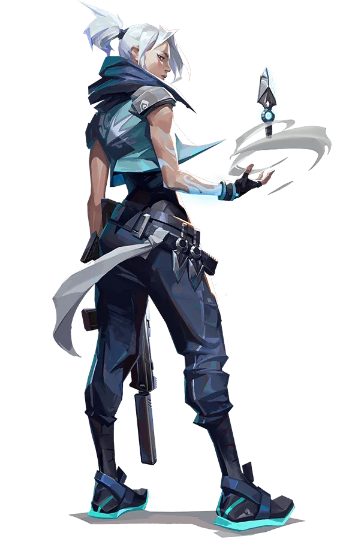
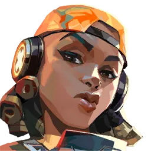
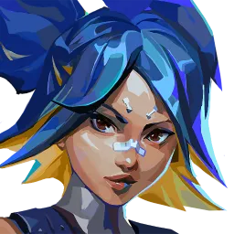
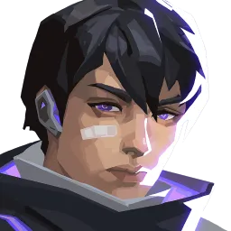
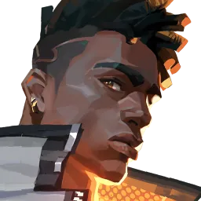
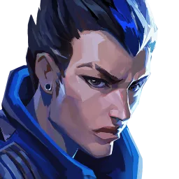
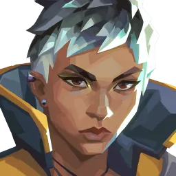

타격대









⚡ 뛰어난 교전력 중심의 메인 포지션
└ 전통적인 엔트리프래거, 플레이메이커, 럴커 역할을 모두 수행하는 범용적 역할군
🔹 1선 타격대 (제트, 레이즈, 네온)
· 최일선 진입 및 사이트 개척 (이동기/어그로 스킬셋)
· 높은 피지컬과 맵 숙련도 요구, 주저 없는 진입 필수
🔹 2선 타격대 (레이나, 아이소, 피닉스)
· 강력한 생존력과 변수 창출 (자힐/보호막/섬광 스킬셋)
· 1선 진입 보조 및 트레이드 킬 유도 (솔로 랭크 최적화)
🔹 멀티·이질적 타격대 (요루, 웨이레이)
· 1·2선 융합 및 강력한 정보 교란, 교전 개시(이니시에이팅) 가능